📋 SUMÁRIO COMPLETO
🎯 Estrutura do Manual
Este manual está organizado em 5 módulos principais, cobrindo todos os tópicos necessários para a prova de Arrais Amador da Marinha do Brasil.
📌 Como Usar Este Material
Este material é totalmente bilíngue (Português/Espanhol). Você pode ler em qualquer idioma!
🇧🇷 Trocar de Idioma: Clique nos botões PT (Português) ou ES (Espanhol) no topo da página para ler tudo em outro idioma.
🌙 Modo Escuro: Clique no botão 🌙 Modo Escuro no canto superior direito para ativar o modo escuro. Isso ajuda a ler quando há pouca luz e reduz o cansaço dos olhos.
📑 Abas: Use as abas no topo (Sumário, Introdução, Módulos, Glossário, Simulados, Referências) para navegar pela apostila.
🏠 INTRODUÇÃO
- Apresentação da Escola
- Estrutura do Curso
- Embarcações Utilizadas
- Objetivos do Curso
- Base Legal e Normativa
🚢 MÓDULO 1 - CONHECENDO UMA EMBARCAÇÃO
1.2. Embarcações
1.3. Classificação
1.4. Partes de uma Embarcação
- Corpos, Proa, Popa, Meia-nau
- Bordos, Bochechas, Través, Alheta
- Casco, Linha d'água, Obra Viva e Morta
- Convés, Superestruturas, Castelo, Tombadilho
1.6. Medidas Não-Lineares
1.7. Movimentos da Embarcação
1.8. Sistema de Fundeio
- Aparelho de Fundear e Suspender
- Manobra de Fundear
- Tipos de Âncoras
⚙️ MÓDULO 2 - PROPULSÃO E OUTROS SISTEMAS
2.2. Sistema de Propulsão
2.3. Partes do Motor
- Bloco, Cabeçote, Cárter
- Pistão, Biela, Virabrequim
- Válvulas e Componentes
- Ciclo de 4 Tempos
- Ciclo de 2 Tempos
- Ciclo de 4 Tempos
- Ciclo de 2 Tempos
2.7. Sistemas Hidráulicos
2.8. Sistemas Elétricos
2.9. Outros Sistemas
🛡️ MÓDULO 3 - SEGURANÇA E LEGISLAÇÃO
3.2. Segurança
- Antes de Embarcar
- Durante a Navegação
- Ao Regressar
- Outras Informações
3.4. Fogo
- Triângulo do Fogo
- Tetraedro do Fogo
- Propagação do Fogo
- Fases de um Incêndio
3.6. Métodos de Extinção
3.7. Tipos de Extintores
3.8. Procedimentos de Combate a Incêndio
3.9. Normas de Incêndio
3.10. Sobrevivência
3.11. Primeiros Socorros
3.12. Compressão Torácica (RCP)
3.13. Legislação
- Águas Jurisdicionais Brasileiras
- Legislação Marítima e Ambiental
🧭 MÓDULO 4 - NAVEGAÇÃO E MANOBRAS
4.2. Cartografia e Cartas Náuticas
4.3. Instrumentos de Navegação
- Bússola
- Princípio de Funcionamento
4.5. Luzes e Marcas
- Embarcações ≥ 50 metros
- Embarcações < 50 metros
- Observações
4.7. Manobras
- Roda a Roda
- Ultrapassagem
- Rumos Cruzados
- Efeitos na Embarcação
- Interação entre Embarcações
- Separação de Tráfego
- Embarcação Obrigada a Manobrar
- Regra da Preferência
- Visibilidade Restrita
4.9. Balizamento
- Sinais de Balizamento
- Sinais Laterais
- Sinais Cardinais
- Outras Balizas
🔗 MÓDULO 5 - CABOS E NÓS
5.2. Nó Direito
5.3. Nó de 8
5.4. Lais de Guia
5.5. Volta do Fiel (Calão)
5.6. Nó de Escota
5.7. Volta do Cunho
📖 GLOSSÁRIO
Definições e Conceitos
Nomenclatura Marítima
📚 REFERÊNCIAS
Legislação Aplicável
Normas Técnicas
🏠 INTRODUÇÃO
Apresentação da Escola
A Central de Aventuras – Escola Náutica é uma escola que se dedica às atividades aquáticas há 10 (dez) anos, agora, também na instrução a navegadores. Homologada pela Marinha do Brasil, prepara seus alunos para realizar a prova de Arrais Amador e Motonauta.
Contamos com estrutura completa em terra de apoio a navegação, equipamentos de segurança, comunicação e embarcações que serão utilizadas para as aulas.
Embarcações Utilizadas
A saída será no trapiche do Canal da Barra. Podendo ser realizada com a embarcação Cultura Subaquática - um Barco-escola (35 pés, motor ciclo diesel) no qual teremos aulas teóricas e práticas aplicadas durante a navegação; o outro bote, Estrela do Sul (30 pés, motor ciclo Otto).
Objetivos do Curso
O curso tem o propósito de ensinar noções de navegação, balizamentos, combate ao incêndio, luzes, primeiros socorros, manobras, segurança no mar, sinais e sobrevivência.
Tendo em vista que este é baseado em normas da Marinha Brasileira, alguns textos foram transcritos na íntegra, conforme a norma por esta disponibilizada, além de outras fontes de conteúdo devidamente listadas nas referências.
Estrutura do Curso
🎯 Módulos do Curso
O curso está organizado em 5 módulos principais que cobrem todos os aspectos necessários para a formação de um Arrais Amador.
1º MÓDULO – Conhecendo uma embarcação
- Como é um barco, seus nomes e sistemas
- Partes da embarcação, nomes e funções
- Como se portar em uma embarcação
2º MÓDULO – Propulsão e Outros Sistemas
- Conhecer de forma usual o sistema de propulsão da embarcação
- Demais sistemas: elétrico, hidráulico e outros
3º MÓDULO – Segurança e Legislação
- Noções de combate a Incêndio
- Primeiros Socorros
- Noções de Segurança no Mar, Rios, Lagoas e Canais
- RIPEAM, NORMAM, infrações e penalidades
4º MÓDULO – Navegação e Manobras
- RIPEAM, navegação restrita
- Sistema de Balizamento, IALA B
- Sinais e marcas, Luzes
- Regras de Governo
- Noções de Comunicação e Comandos
5º MÓDULO – Cabos e nós
- Lais de Guia
- Calão
- Nó Direito
- Nó de Oito
Base Legal e Normativa
Este curso está alinhado com as normas e regulamentações da Marinha do Brasil, incluindo:
- Regulamento Internacional para Evitar Abalroamentos no Mar (RIPEAM)
- Normas da Autoridade Marítima (NORMAM)
- Legislação marítima brasileira aplicável
⚠️ Importante
O Comandante é responsável por tudo e por todos a bordo. É, em princípio, o responsável legal pelas vidas humanas e cargas que transporta.
🚢 1º MÓDULO – CONHECENDO UMA EMBARCAÇÃO
1.1. Objetivo Geral
Promover o conhecimento em diferentes tipos de embarcações, nomes e sistemas. Bem como suas partes e funções, além de como se portar em uma embarcação.
1.2. Embarcações
É denominada embarcação uma construção com casco flutuante, feita de diversos materiais, podendo transportar carga e pessoas com segurança sobre as águas.
De acordo com o seu tamanho podem ser chamados de diversos nomes, como Navio (embarcação de grande porte), Escuna, Lancha, e outros.
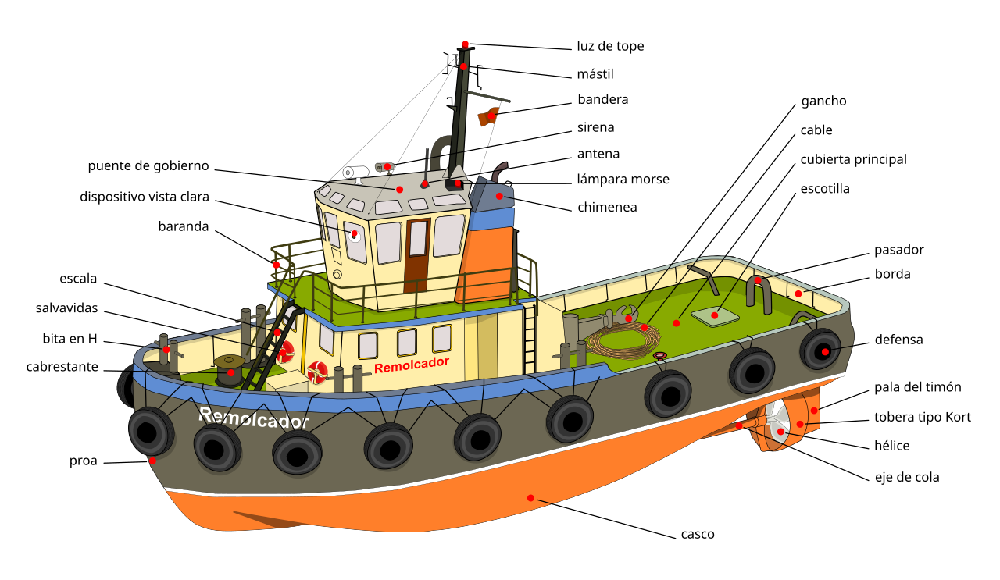
Estrutura detalhada de uma embarcação de esporte e recreio
1.3. Classificação das Embarcações
| Quanto à finalidade | Quanto ao material de construção | Quanto à propulsão |
|---|---|---|
| Guerra - Embarcações militares | Madeira e aço - Materiais tradicionais | Combustão - Motores a diesel ou gasolina |
| Mercante e apoio marítimo - Pesca, reboque, transporte | Aço - Material predominante em grandes embarcações | Combustão - Principal sistema em embarcações comerciais |
| Esporte e recreativo - Iates, veleiros, barcos de passeio | Diversos materiais - Fibra de vidro, plásticos, alumínio | Diversos sistemas - Combustão, elétricos, vela, remo |
No caso se refere à propulsão predominante, podendo a mesma embarcação possuir mais de um sistema de propulsão.
1.4. Partes de uma Embarcação
🏗️ Estrutura Básica de uma Embarcação
Partes Principais:
- Corpos - São duas partes da embarcação (divisão transversal): corpo-de-vante (da meia-nau para frente) e corpo-de-ré (da meia-nau para trás)
- Proa - Parte terminal de vante da embarcação com formato de cunha para facilitar o corte da água
- Popa - Terminação do corpo de ré, projetada para eficiência do sistema de propulsão e leme
- Meia-nau - Parte central transversal que divide os corpos da embarcação
- Bordos - Lados da embarcação (divisão longitudinal): boreste (BE - direita) e bombordo (BB - esquerda)
- Bochechas/Amura - Partes curvas do costado próximos à proa
- Través - Direção transversal perpendicular à longitudinal
- Alheta - Partes curvas do costado próximos à popa
Estruturas do Casco:
- Casco - Base da embarcação com quilha como peça principal de sustentação
- Linha d'água - Ponto de interseção da superfície da água com o casco durante a flutuação
- Obra Viva - Parte inferior do casco em contato com a água
- Obra Morta - Parte superior do casco não em contato com a água
- Convés - Fechamento do casco, podendo ser de madeira ou metálico
- Superestruturas - Elevações construídas sobre o convés principal
- Castelo - Plataforma no convés a vante para serviços de atracação e fundeio
- Tombadilho - Superestrutura situada na popa para manobras
- Mastro - Estrutura vertical com múltiplas funções (sinais, velas, vigilância)
- Leme - Dispositivo para dar direção à embarcação
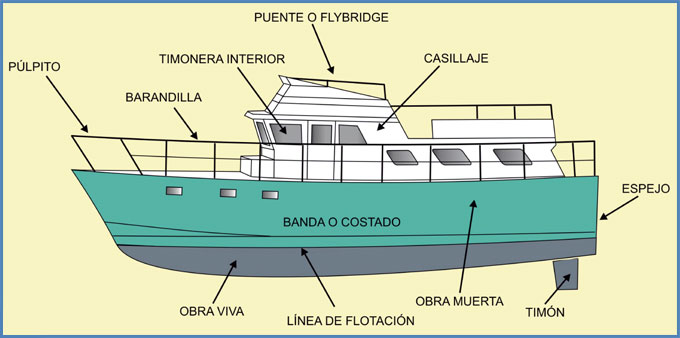
Ilustração da obra viva e obra morta na estrutura do casco
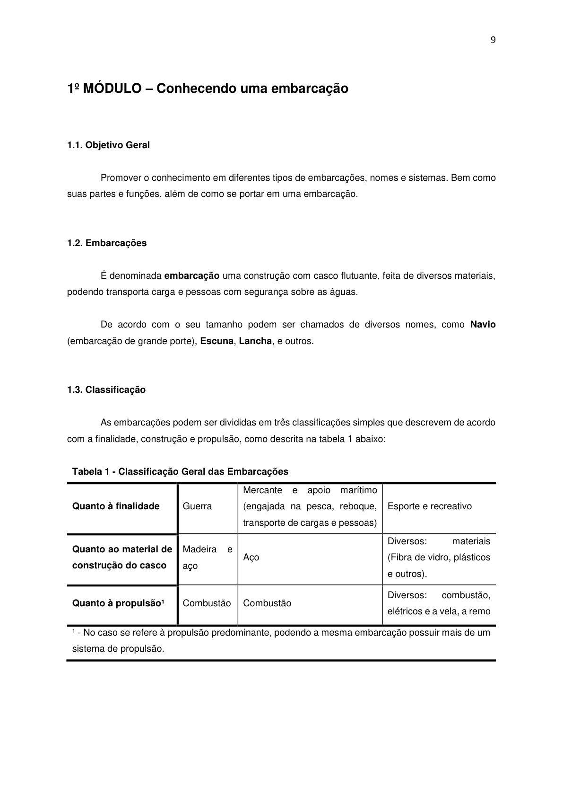
Diagrama ilustrando as principais partes de uma embarcação
1.5. Medidas Lineares
- Comprimento - Distância horizontal entre proa e popa (comprimento roda a roda)
- Pontal - Distância vertical entre o plano de convés e o plano da quilha
- Boca - Maior largura da embarcação
- Calado - Distância vertical entre a superfície d'água e a parte mais baixa da embarcação
- Borda Livre - Distância vertical entre o plano do convés e a superfície da água
- Contorno - Medida tomada na parte mais larga, de borda à borda, passando pela quilha
1.6. Medidas Não-Lineares
- Deslocamento - Peso ou volume de água que uma embarcação move quando flutuando
- Comprimento da Arqueação - Medida horizontal entre proa e popa pela parte interna
- Tonelagem de Porte Bruto - Diferença entre deslocamento máximo e mínimo
- Peso Máximo de Carga - Deslocamento máximo menos pesos das cargas operacionais
1.7. Movimentos da Embarcação
🔄 Movimentos Principais
Tipos de Movimentos:
- Balanço - Movimento de oscilação de um bordo para outro (pode atingir 40º)
- Caturro - Movimento de oscilação vertical no sentido popa-proa (até 15º, muito perigoso)
- Cabeceio - Movimento de oscilação horizontal no sentido proa-popa (até 15º)
- Deslizamento Lateral - Rápido movimento lateral quando atingida por onda ou rajada
- Deslizamento para Vante - Rápido movimento para frente ao descer uma onda
1.8. Sistema de Fundeio
1.8.1. Aparelho de Fundear e Suspender
Conjunto de equipamentos para manter a embarcação no fundeadouro, evitando ser arrastada por forças naturais.
Componentes do Sistema:
- Máquina de suspender - Cabrestante, cabestrante ou molinete
- Âncoras - Almirantado, Danforth, Patente, etc.
- Amarras - Corrente especial com elos
- Gateira - Aberturas no convés para passagem das amarras
- Escovém - Local de estocagem da âncora e passagem da amarra
- Mordente - Peça fixa no convés para aguentar a amarra
- Acessórios - Cabeços, cunhos, buzinas, tamancas, roletes
1.8.2. Manobra de Fundear
📋 Passos para Fundear em Segurança:
- Estudar o local - Conhecer tipo de fundo, altura da sonda, condições atmosféricas
- Preparar o ferro - Tripulante à proa com âncora preparada, amarra sem "cocas"
- Aproar ao mais forte - Vento ou corrente, retirar motor e arreiar vela
- Arrear o ferro - Descer âncora até tocar no fundo, soltar devagar a amarra
- Verificar a posição - Usar pontos de referência na costa para verificar se não descala
Comprimento da amarra: Normalmente 3 a 5 vezes a altura do fundo em condições normais; 5 a 7 vezes se houver previsão de "tempo" rijo.
1.8.3. Tipos de Âncoras Mais Usados
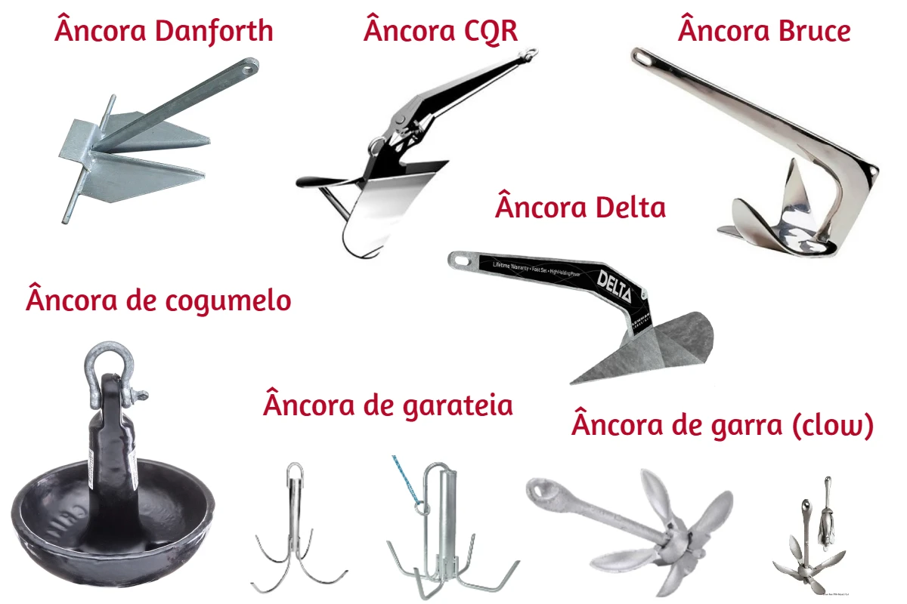
Diferentes tipos de âncoras utilizadas em embarcações
Comprimento total recomendado: Mínimo de 50 metros. Em águas calmas: 3-5 vezes a altura da maré; com tempo rijo: 5-7 vezes.
1.9. Como se Portar em uma Embarcação
Uma embarcação pode ser a casa de muitas pessoas e local de trabalho de muitas outras. Por este motivo, devemos:
- Respeitar o local e procurar saber das suas normas e regras
- Identificar o sistema de salvamento e combate a incêndio
- Aprender o funcionamento básico do sistema de comunicação
- Informar-se sobre normas e condutas para garantir momentos seguros
👨✈️ Responsabilidade do Comandante
O mestre da embarcação é o líder com responsabilidade de lidar com diversas situações durante a navegação. Deve estar em plenas condições físicas e mentais para exercer este papel.
📝 Exercícios de Revisão - Módulo 1
Teste seus conhecimentos sobre embarcações e suas partes:
Questão 1: Qual é a parte frontal da embarcação chamada?
Resposta: Proa
Explicação: A proa é a terminação da embarcação do corpo de vante, com formato de cunha para facilitar o corte da água.
Questão 2: O que significa "boreste" e "bombordo"?
Resposta: Boreste (BE) é o lado direito da embarcação; Bombordo (BB) é o lado esquerdo.
Explicação: Estes são os bordos da embarcação, estabelecidos olhando-se da popa para a proa.
Questão 3: Qual é a diferença entre "obra viva" e "obra morta"?
Resposta: Obra Viva é a parte do casco em contato com a água; Obra Morta é a parte superior do casco não em contato com a água.
Explicação: A linha d'água separa estas duas partes do casco da embarcação.
Questão 4: Quais são os três movimentos principais de uma embarcação?
Resposta: Balanço (oscilação lateral), Caturro (oscilação vertical) e Cabeceio (oscilação horizontal).
Explicação: Estes movimentos ocorrem devido à ação das ondas e do vento sobre a embarcação.
Questão 5: Qual deve ser o comprimento mínimo recomendado de amarra para fundear?
Resposta: Mínimo de 50 metros. Em águas calmas: 3-5 vezes a altura; com tempo rijo: 5-7 vezes.
Explicação: O comprimento adequado da amarra é fundamental para garantir segurança no fundeio.
Questão 6: Cite três tipos de âncoras utilizadas em embarcações.
Resposta: Almirantado, Danforth, Patente e Flutuante.
Explicação: Cada tipo de âncora é mais adequado para diferentes tipos de fundo e situações.
🌐 Terminologia Náutica em Inglês
Principais termos náuticos em inglês e suas traduções para o português:
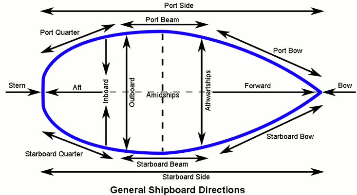
Terminologia náutica internacional - principais termos em inglês
💡 Dica Importante
No Brasil, é muito comum usar as siglas BB para Bombordo (sempre sinalizado com luz vermelha) e BE para Boreste (sempre sinalizado com luz verde). Isso ajuda muito na identificação visual! ⚓
⚙️ 2º MÓDULO – PROPULSÃO E OUTROS SISTEMAS
2.1. Objetivo Geral
Conhecer de forma usual o sistema de propulsão da embarcação e demais sistemas, como elétrico, hidráulico e outros.
2.2. Sistema de Propulsão
Algumas embarcações apresentam sistemas de velas, remos e outros geradores de força motriz de deslocamento, mas vamos tratar dos motores de combustão interna, que são mais encontrados.
Sistemas de Propulsão
Motores e componentes mecânicos
Representação dos sistemas de propulsão de embarcações
Exemplos visuais de configurações de motores
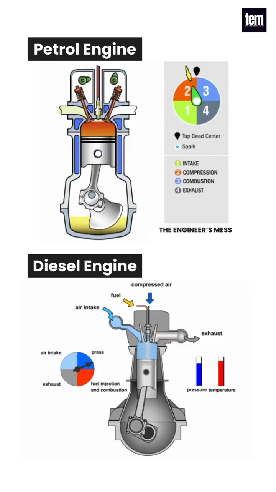
{kind=link}
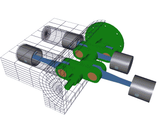
{kind=link}
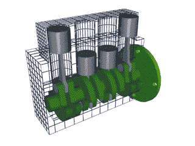
{kind=link}
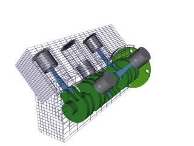
{kind=link}
Motores de combustão interna são subdivididos em 3 classes:
- Motores do ciclo Otto - Combustão com centelha
- Motores do ciclo Diesel - Combustão por compressão
- Motores do ciclo Wankel - Rotativo (menos comum em embarcações)
2.3. Partes de um Motor de Combustão Interna
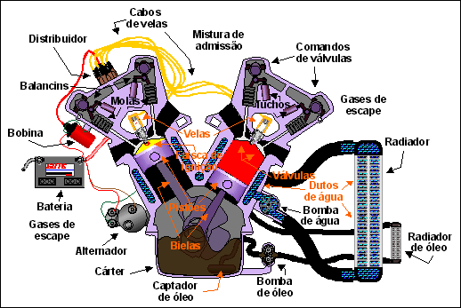
{kind=link}
🔧 Componentes do Motor
2.3.1. Bloco
É a maior parte do motor e sustenta todas as outras partes. Normalmente construídos de aço, mas podem ter adições para melhorar propriedades. Contém cilindros, dutos de óleo para lubrificação e dutos de refrigeração.
2.3.2. Cabeçote e Tampa de Válvulas
Fecha o bloco na sua parte superior, sendo que a união é feita por parafusos. Normalmente fabricado com o mesmo material do bloco. Entre o bloco e o cabeçote existe uma junta de vedação.
2.3.3. Cárter
Fecha o bloco na sua parte inferior com vedação feita por junta ou cola. Serve como reservatório para o óleo lubrificante do motor, geralmente contendo uma saída na parte mais baixa para drenagem do óleo.
2.3.4. Pistão (Êmbolo) e suas partes
É a parte do motor que recebe o movimento de expansão dos gases. Feito de ligas de aço e alumínio, tem formato aproximadamente cilíndrico. Possui anéis de vedação para evitar perda de pressão.
2.3.5. Biela
Parte do motor que liga o pistão ao virabrequim. Fabricada de aço forjado, divide-se em três partes: cabeça, corpo e pé.
2.3.6. Virabrequim e Volante do motor
Virabrequim transforma movimento retilíneo dos pistões em rotacional. Volante acumula energia cinética, propiciando velocidade angular uniforme.
2.3.7. Válvulas e outras componentes
Dois tipos de válvulas: de admissão e de escape. São acionadas por sistema de comando de válvulas.
2.3.8. Outras partes do motor
Além das partes citadas, os motores apresentam outros sistemas como refrigeração, lubrificação, injeção de combustível, sistema elétrico de ignição, câmbio e outros.

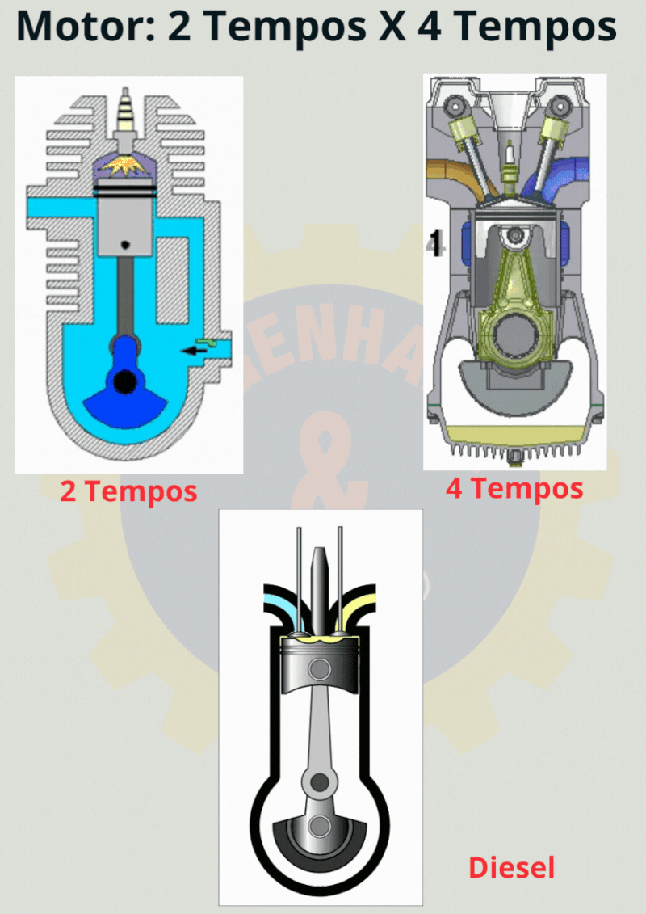
{kind=link}
2.4. Motor do ciclo Otto
Motores do ciclo Otto são aqueles que apresentam sistema de mistura de ar e combustível na admissão para a câmara de combustão interna e a explosão da mistura dá-se a partir de centelha elétrica fornecida pelo sistema de ignição.
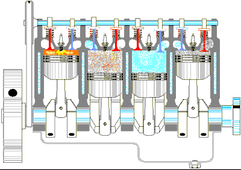
{kind=link}
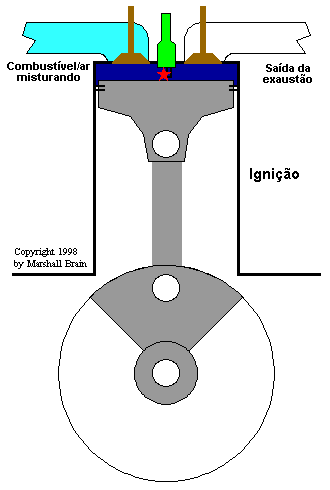
{kind=link}
🔄 Ciclo de 4 Tempos - Motor Otto
2.4.1. Ciclo de 4 tempos do motor de ciclo Otto
Este apresenta giro de 720° no virabrequim, resultando em 4 movimentos distintos do pistão:
- Admissão - Válvula de admissão aberta, pistão desce criando depressão
- Compressão - Válvulas fechadas, pistão sobe comprimindo mistura
- Combustão/explosão - Centelha da vela inflama mistura comprimida
- Escape/expulsão - Válvula de escape abre, gases são expelidos
2.4.2. Ciclo de 2 tempos do motor de ciclo Otto
Ciclo completo se realiza em apenas uma rotação do eixo de manivelas (360°). A mistura ar+combustível entra através do cárter do motor.
Fases do ciclo:
- Lavagem e Admissão / Compressão - Pistão do PMI para PMS, criando depressão no cárter
- Combustão e Expansão / Escape e Lavagem - Centelha inflama mistura, gases expandem
2.5. Motores do ciclo Diesel
Os motores de ciclo Diesel possuem características que os diferem dos de ciclo Otto. A admissão ocorre apenas com o ar, o combustível é injetado diretamente na câmara de combustão e a queima se dá por combustão espontânea quando encontra o ar comprimido.
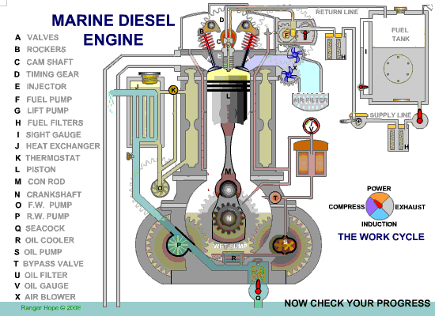
{kind=link}
2.5.1. Ciclo de 4 tempos do motor de ciclo Diesel
- Aspiração - Válvula de aspiração abre, êmbolo aspira somente ar
- Compressão - Pistão comprime o ar, que sofre grande aumento de temperatura
- Combustão - Combustível injetado inflama pela temperatura do ar comprimido
- Escape - Válvula de escape abre, gases são expelidos
2.5.2. Ciclo de 2 tempos do motor de ciclo Diesel
O ar sofre compressão antes de admitido na câmara de combustão. O ciclo completa-se com apenas 1 volta (360°) no virabrequim.
2.5.3. Motores do ciclo Wankel - Rotativo
Os motores rotativos Wankel têm câmara rotativa em vez de pistão reciprocante; são compactos, mas menos comuns em embarcações.
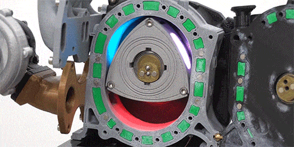
{kind=link}
2.6. Sistemas de Refrigeração
2.6.1. Arrefecimento direto por meio de ar (forçado)
Retirada de calor através da passagem forçada de ar por aletas fixas no bloco do motor. A passagem de ar pode ser forçada por ventoinha ou de forma natural.
2.6.2. Arrefecimento por meio líquido
Sistema mais complexo envolvendo trocadores de calor, bombas, mangueiras, dutos internos, tanques de expansão e válvula termostática. Em embarcações, o trocador de calor é frequentemente a água do próprio meio.
⚠️ Importante para Motores de Popa
É necessária limpeza após o término do passeio, lavando o sistema com água doce para evitar corrosão.
2.7. Sistemas Hidráulicos
O princípio de funcionamento baseia-se na transmissão de força através de fluido incompressível (óleo).
Componentes principais:
- Reservatório de óleo
- Bomba de óleo
- Válvula de comando
- Atuador hidráulico
2.7.1. Sistema de Leme Hidráulico
Utiliza a força gerada pela pressão de óleo hidráulico atuando em êmbolos ou motor hidráulico acoplado à madre do leme.
2.8. Sistemas Elétricos
2.8.1. Eletricidade
Fenômeno físico resultante do movimento de elétrons. Pode ser contínua (CC/DC) ou alternada (AC).
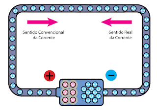
2.8.2. Tensão, corrente e outras grandezas elétricas
- Tensão (U) - Medida em Volts (V), diferença de potencial elétrico
- Corrente (I) - Medida em Ampère (A), intensidade da passagem de elétrons
- Potência (Q) - Medida em Watts (W) ou Volt.Ampère (VA), consumo de energia
2.8.3. Circuitos elétricos
Componentes básicos:
- Fonte de energia (baterias, geradores)
- Condutores (fios com bitola adequada)
- Chave de comando (interruptores, contactoras)
- Equipamento consumidor (lâmpadas, motores, rádios)
Tipos de ligação:
- Série - Um único caminho: a mesma corrente atravessa todos os pontos; a tensão se reparte em cada carga. Se um componente abre, todo o circuito apaga (por isso é raro em iluminação de bordo).
- Paralelo - Vários caminhos: cada carga recebe a mesma tensão; as correntes se dividem conforme o consumo. Se uma lâmpada queima, as demais continuam acesas (padrão recomendado na embarcação).
Visualização: Circuito em série
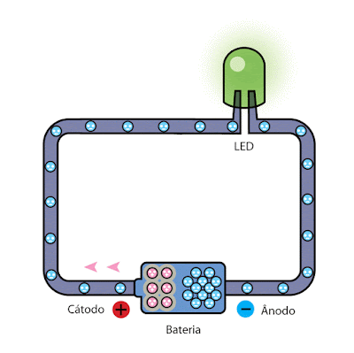
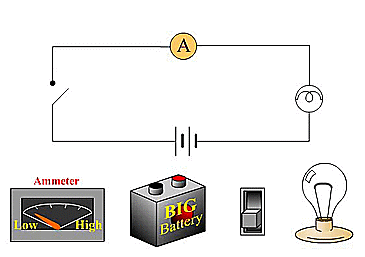
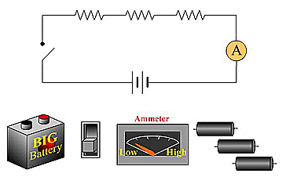
Visualização: Circuito em paralelo
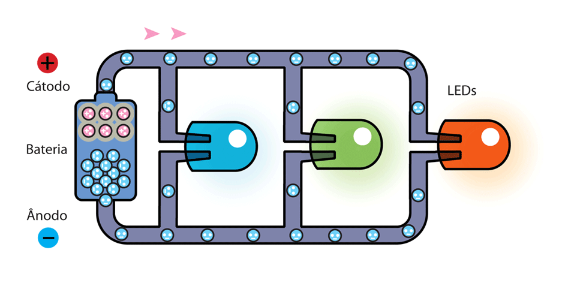
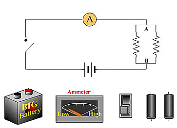
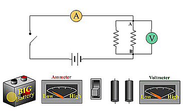
2.9. Outros Sistemas
De acordo com a embarcação, podem existir outros sistemas como:
- Sistema de ar comprimido
- Centrais de aquecimento por caldeiras
- Tratamento de efluentes de bordo
- Separadores de água e óleo
- Destilação de água
É importante conhecer estes sistemas para operá-los corretamente ou desativá-los em situações adversas.
🛡️ 3º MÓDULO – SEGURANÇA E LEGISLAÇÃO
3.1. Objetivo Geral
Proporcionar ao aluno conhecimentos sobre segurança da embarcação e a sua, além de conhecimentos básicos de prevenção e combate a princípios de incêndio a bordo, técnicas de sobrevivência e primeiros socorros.
3.2. Segurança
3.2.1. Antes de embarcar
- O Comandante é responsável por tudo e por todos a bordo
- Leia o Regulamento Internacional para Evitar Abalroamentos no Mar (RIPEAM)
- Realize a manutenção preventiva eficaz, sem improvisos
- Verifique rigorosamente o material de salvatagem
- Inspecione o material de combate a incêndio
- Vistorie o casco quanto à estanqueidade
- Verifique a integridade do sistema de combustível
- Faça o planejamento da singradura
- Conheça a previsão do tempo
- Entregue o aviso de saída ao iate clube ou marina
3.2.2. Durante a navegação
- Esteja sempre atento na condução da embarcação
- Evite consumo de bebidas alcoólicas
- Conduza com prudência e velocidade compatível
- Conheça sempre o bordo de menor profundidade
- Ao fundear, faça com baixa velocidade
3.2.3. Ao regressar
- Avise ao clube ou marina a sua chegada
- Respeite a velocidade máxima na área de fundeio
- Evite esgotar porões até o final para não poluir
- Retire o lixo de bordo e coloque em local apropriado
3.2.4. Outras informações importantes
- O Comandante pode retirar de bordo quem se exceder no consumo de álcool ou drogas
- Proibir instalação de redes próximas à balaustrada
- Evitar manobras arrojadas e ultrapassagens como "brincadeira"
- Manter equipamento rádio no canal adequado
- Reduzir velocidade ao cruzar com embarcações menores
- Denunciar irregularidades em embarcações
📜 Os Dez Mandamentos da Segurança no Mar
- Faça manutenção correta e periódica da sua embarcação
- Tenha a bordo todo o material de salvatagem prescrito
- Respeite a lotação e tenha coletes para todos
- Mantenha extintores em bom estado e dentro da validade
- Ao sair, informe seu plano de navegação
- Conduza com prudência e velocidade compatível
- Se beber, passe o timão a alguém habilitado
- Mantenha distância das praias e banhistas
- Respeite a vida, seja solidário, preste socorro
- Não polua o mar
3.3. Prevenção contra incêndio
Causas possíveis: descargas elétricas atmosféricas, sobrecarga nas instalações elétricas, cigarros e fósforos em locais impróprios, falta de cuidado com materiais inflamáveis, trapos embebidos em óleo, acúmulo de lixo no porão, gordura em telas e dutos, vasilhames destampados com combustíveis voláteis, vazamentos em sistemas de óleo.
3.4. Fogo
O fogo é uma reação química exotérmica que liberta calor, quando temos substância combustível e um comburente reagindo.
🔥 Triângulo do Fogo
3.4.1. Triângulo do Fogo
Para que ocorra a combustão, fazem-se necessários três componentes:
- Combustível - Materiais capazes de entrar em combustão (sólido, líquido, gasoso)
- Comburente - Oxigênio do ar atmosférico (21%)
- Calor - Energia desprendida no processo de queima
3.4.2. Tetraedro do Fogo
Adiciona o elemento "Reação em Cadeia" ao triângulo do fogo.
3.4.3. Propagação do Fogo
Formas de propagação:
- Por condução - Passando por contacto de um material para outro
- Por convecção - Diferença de densidade dos gases quentes e frios
- Por radiação - Transmissão por ondas eletromagnéticas
3.4.4. Fases de um Incêndio
- Eclosão - Fase inicial do incêndio
- Propagação - Combustão ativa-se rapidamente
- Combustão contínua - Temperatura mantém-se constante no máximo
- Declínio das chamas - Combustível vai sendo consumido
3.5. Classes do Fogo
| Classe | Material Combustível | Agentes Extintores |
|---|---|---|
| A | Papéis, madeiras, cartões, têxteis, recicláveis | Água, espumas, pó químico ABC, CO₂ |
| B | Nafta, gasolina, tintas, óleos, líquidos inflamáveis | Espumas, pó químico, CO₂ (não usar água em jatos) |
| C | Butano, propano e outros gases | Pó químico, CO₂ (não usar água nem espuma) |
| D | Equipamentos e instalações elétricas energizadas | CO₂, pó químico especial (não usar extintor comum) |
3.6. Métodos de Extinção
- Isolamento - Retirada do material combustível
- Abafamento - Retirada do comburente (oxigênio)
- Resfriamento - Diminuição da quantidade de calor
- Interrupção da Reação em Cadeia - Uso de agentes extintores específicos
3.7. Tipos de Extintores
- agua pressurizada - Classe A (resfriamento e abafamento)
- Gás carbônico - Classe C (não condutor de eletricidade)
- Pó químico seco - Classe B (abafamento)
- Pó químico especial - Classe D (abafamento)
- Pó para classes ABC - Mais moderno, atende três classes
3.8. Procedimentos de combate a incêndio a bordo
- Manobrar a embarcação com o vento a favor, colocando o incêndio na popa
- Fazer com que cada integrante use o colete salva-vidas
- Cortar o fornecimento de combustíveis (perigo de explosão)
- Usar os extintores de forma correta e ao máximo
- Procurar abafar e manter o local até o resfriamento
3.9. Normas de incêndio
- NR 23 - Proteção Contra Incêndios (Norma Regulamentadora)
- NORMAM-03 - Determina número e localização de extintores
Exigências por tamanho da embarcação:
- Até 8 metros: 1 extintor B-1 próximo ao motor
- Até 12 metros: 3 extintores B-1 (2 perto do motor, 1 próximo ao comando)
Validade: 3 anos para extintor novo, 1 ano após primeira recarga.
3.10. Sobrevivência
Procedimentos para abandono da embarcação:
- Usar colete salva-vidas antes mesmo da situação se concretizar
- Vestir roupas para proteção contra hipotermia e insolação
- Manter distância segura da embarcação e permanecer boiando
- Manter o grupo unido e próximo para reduzir hipotermia
- Levar itens úteis para embarcação de sobrevivência (água, mantimentos, comunicação)
- NÃO ingerir água do mar - agrava desidratação
3.11. Noções de Primeiros Socorros
Material complementar: Apostila: Noções de Primeiros Socorros (Notion)
Enjoo
- Colocar pessoa em local ventilado e afrouxar roupas
- Se apresentar vômito, deitar sobre lado esquerdo (posição de descanso)
- Usar remédios anti-enjoo com indicação médica
Afogamentos
- Casos leves: Afrouxar roupas, deitar de bruços com cabeça virada
- Casos severos: Verificar obstrução respiratória, aplicar respiração artificial
Hemorragias
- Externas: Estancamento por compressão, elevar região afetada
- Internas: Reconhecer por manchas roxas no abdômen, vômito com sangue
Fraturas
- Imobilizar região afetada na posição que se encontra
- Nunca tentar reposicionar os ossos
- Em fraturas expostas, conter hemorragia se houver
Queimaduras
Classificação:
- 1º Grau: Vermelhidão da pele
- 2º Grau: Surgimento de bolhas
- 3º Grau: Destruição de tecidos
Procedimentos: Limpar região, cobrir com gaze molhada em soro fisiológico, encaminhar ao serviço médico.
Não fazer: Tirar roupas, tocar, furar bolhas ou aplicar soluções (exceto água limpa para resfriar).
Insolações
- Colocar pessoa em repouso, cabeça elevada
- Refrescar corpo com compressas frescas ou banho
Desmaios
- Prevenção: Sentar com pernas afastadas, colocar cabeça entre joelhos
- Se desmaiado: Deitar de costas e elevar as pernas
Entorses, Luxação e Contusão
- Aplicar bolsa de gelo
- Imobilizar
- Encaminhar ao serviço médico
Hipotermia
- Manter pessoa em local abrigado, seca e aquecida
- Oferecer bebidas quentes não alcoólicas (se consciente)
3.12. Compressão Torácica (RCP)
🫀 Procedimento de Reanimação Cardiopulmonar
- Colocar vítima sobre superfície rígida
- Verificar se não há pulso no pescoço
- Posicionar-se ao lado da vítima
- Aplicar pressão sobre o peito com braços retos (60-80 vezes por minuto)
- Alternar 30 compressões com 2 respirações (30x2)
- Repetir 5 ciclos completos
- Se não houver reação, continuar até exaustão ou chegada do socorro
- Se houver reação, colocar em posição de descanso
3.13. Legislação
3.13.1. Águas Jurisdicionais Brasileiras
🌊 Divisão das Águas Marítimas
Lei 8.617/1993 - Dispõe sobre mar territorial, zona contígua, zona econômica exclusiva e plataforma continental.
Principais Leis Marítimas:
- Lei 9.537/1997 - Segurança do tráfego aquaviário
- Lei 9.432/1997 - Ordenação do transporte aquaviário
- Lei 9.966/2000 - Prevenção e controle da poluição
- Lei 9.774/1998 - Registro da propriedade marítima
3.13.2. Legislação Marítima e Ambiental
⚖️ Atribuições da Autoridade Marítima
De acordo com a Lei 9.966, a Autoridade Marítima exerce diretamente pelo Comandante da Marinha a responsabilidade pela salvaguarda da vida humana e segurança da navegação.
Principais atribuições:
- Fiscalizar navios, plataformas e cargas perigosas
- Levantar dados sobre incidentes com danos ambientais
- Encaminhar informações para avaliação de danos ambientais
- Comunicar irregularidades ao órgão regulador do petróleo
Penalidades Aplicáveis:
- Multa
- Suspensão do certificado de habilitação
- Cancelamento do certificado de habilitação
- Demolição de obras e benfeitorias
Circunstâncias Agravantes:
- Reincidência
- Emprego de embarcação na prática de ato ilícito
- Embriaguez ou uso de substância entorpecente
- Grave ameaça à integridade física de pessoas
🧭 4º MÓDULO – NAVEGAÇÃO E MANOBRAS
4.1. Introdução
Neste módulo veremos noções de navegação com uso de cartas náuticas, uso de bússola e estudo do Regulamento Internacional para Evitar Abalroamentos no Mar (RIPEAM).
4.2. Fundamentos de cartografia e cartas náuticas
Nosso planeta não possui formato esférico perfeito. Por convenções internacionais foi criado o sistema de coordenadas geográficas que o considera esférico e o divide em linhas horizontais e verticais.
Navegação e Sinalização
Instrumentos e técnicas de navegação
Instrumentos de navegação e sistemas de sinalização
Sistema de coordenadas:
- Paralelos - Linhas horizontais a partir da Linha do Equador
- Meridianos - Linhas verticais a partir do Meridiano de Greenwich
- Norte Magnético - Ponto de convergência das linhas magnéticas
- Norte Verdadeiro - Eixo imaginário terrestre
- Milha Náutica - 1.852 metros (acordo internacional de 1929)
Tipos de Norte:
- Rumo verdadeiro (Rv) - Baseado no Norte Verdadeiro
- Rumo magnético (Rmg) - Baseado no Norte Magnético
Declinação Magnética - Diferença entre Nortes Verdadeiro e Magnético, deve ser considerada nos cálculos de navegação.
4.3. Instrumentos de Navegação
4.3.1. Bússola
As bússolas, também chamadas de agulhas magnéticas, consistem em uma Rosa Circular graduada de 000º a 360º, onde apoiada no seu centro, a agulha magnética fica livre para girar.
4.3.2. Princípio de funcionamento de uma bússola
Em operação, a agulha irá se alinhar com as linhas de força do campo magnético da terra existente no local. Estas linhas de força denominadas Meridianos Magnéticos indicam a direção do Norte Magnético.
🎯 Características de uma Boa Bússola
- Sensível - Acusa qualquer variação da proa
- Estável - Indica firmemente a proa mesmo em condições adversas
- Sem interferência - Não deve ter materiais magnéticos próximos
4.4. RIPEAM - Definições e aplicação das regras
Para compreender totalmente as regras é importante conhecer o significado dos termos:
- Embarcação - Qualquer engenho ou aparelho usado como meio de transporte sobre a água
- Embarcação de propulsão mecânica - Qualquer embarcação movimentada por meio de máquinas ou motores
- Embarcação a vela - Qualquer embarcação sob vela, sendo propelida apenas pela força do vento
- Em movimento (navegando) - Aplica-se a todas as embarcações que não se encontram fundeadas, amarradas ou encalhadas
⚠️ Aplicação do RIPEAM
O RIPEAM aplica-se a todas as embarcações em mar aberto e em todas as águas a este ligadas, navegáveis, incluindo muitos rios, águas interiores e portos.
4.5. Luzes e marcas
💡 Sistema de Luzes de Navegação
Luzes devem ser exibidas do pôr ao nascer do Sol e em períodos de visibilidade restrita.
Diagrama RIPEAM — Luzes (PDF)

RIPEAM — Luzes: Diagrama com as posições relativas das luzes de bordos e alcançado. Abrir PDF (nova aba) • Baixar versão acessível (.txt)
RIPEAM — Símbolos e Abreviaturas (parte 1)

RIPEAM — Símbolos (1): Conjunto de símbolos usados em cartas e sinalizações náuticas. Abrir PDF (nova aba) • Baixar versão acessível (.txt)
RIPEAM — Símbolos e Abreviaturas (parte 2)

RIPEAM — Símbolos (2): Continuação dos símbolos e abreviaturas com legendas. Abrir PDF (nova aba) • Baixar versão acessível (.txt)
4.5.1. Embarcação de propulsão mecânica de comprimento igual ou superior a 50 metros
Em movimento deve exibir: duas luzes de mastro, luzes de bordos, luz de alcançado.
4.5.2. Embarcação de propulsão mecânica de comprimento inferior a 50 metros
Em movimento deve exibir: uma luz de mastro, luzes de bordos, luz de alcançado.
4.5.3. Observações
- Embarcações menores podem exibir luzes combinadas ou apenas luz circular branca
- Embarcações < 20m: luzes de bordos podem ser combinadas em lanterna única
- Embarcações < 12m: podem exibir apenas luz circular branca e luzes de bordos
- Embarcações < 7m (velocidade ≤ 7 nós): podem exibir apenas luz circular branca
4.6. Embarcações a vela em movimento
Uma embarcação a vela em movimento deve exibir:
- Luzes de bordos
- Luz de alcançado
Opcional: Duas luzes circulares dispostas verticalmente (superior encarnada, inferior verde) no tope do mastro.
4.7. Manobras
4.7.1. Roda a Roda
Quando duas embarcações encontram-se em mesma direção, porém sentido contrários, com risco de colisão. Ambas devem guinar à boreste, passando à bombordo da outra.
4.7.2. Ultrapassagem ou Alcançando
Indiferente à situação, toda embarcação que esteja ultrapassando outra deverá manter-se fora do caminho desta.
Ilustração: Ultrapassagem (PDF)

RIPEAM — Ultrapassagem: Exemplo de manobra durante ultrapassagem e regras de passagem. Abrir PDF (nova aba) • Baixar versão acessível (.txt)
4.7.3. Situação de Rumos Cruzados ou de Colisão
Quando duas embarcações navegam em rumos que se cruzam com risco de colisão, a embarcação que avistar a outra de boreste deverá se manter fora do caminho.
4.7.4. Efeitos que influenciam na embarcação
- Velocidade - Em águas de pouca profundidade, aumenta o calado
- Tendência em águas restritas - Proa guina para margem distante, popa é atraída para margem próxima
4.7.5. Interação entre embarcações
Três momentos distintos:
- Interação pela proa - Amuras se repelem devido às ondas
- Interação pelo través - Correntes se equilibram, embarcações ficam paralelas
- Interação pela popa - Alhetas se atraem mutuamente (momento de cuidado)
4.7.6. Esquema de Separação de Tráfego
Embarcações usando esquema de separação de tráfego devem:
- Seguir na via de tráfego apropriada na direção do fluxo
- Manter-se longe da linha ou zona de separação
- Entrar ou sair pelas extremidades ou com menor ângulo possível
- Cruzar vias com rumo perpendicular à direção do fluxo
4.7.7. Embarcação Obrigada a Manobrar
Toda embarcação obrigada a se manter fora do caminho de outra deve manobrar antecipada e substancialmente. A embarcação que se mantém em curso deve manter velocidade e rumo.
4.7.8. Regra da Preferência
| Quanto à propulsão / serviço | A - Sem governo | B - De manobra restrita | C - Engajada na pesca | D - A vela |
|---|---|---|---|---|
| Propulsão mecânica | X | X | X | X |
| A vela | X | X | X | |
| Engajada na pesca | X | X | ||
| De manobra restrita | X |
🎯 Resumo Visual da Ordem de Preferência
Regra: Quem tem a coluna mais cheia (mais X) deve dar passagem para quem tem menos X na tabela acima.
4.7.9. Embarcações em Visibilidade Restrita
- Seguir em velocidade segura adaptada às circunstâncias
- Ao detectar outra embarcação apenas por radar, manobrar antecipadamente
- Evitar alteração de rumo para bombordo para embarcação por ante-a-vante do través
- Evitar mudança de rumo em direção a embarcação no través ou por ante-a-ré
4.8. Sinais Sonoros
📢 Sinais Sonoros de Advertência
Padrões de sinais:
RIPEAM — Sinais Sonoros (PDF)

RIPEAM — Sinais Sonoros: Tabela com sinais sonoros, durações e significados (ex.: 1 toque curto = atenção, 2 toques curtos = manobra). Abrir PDF (nova aba) • Baixar versão acessível (.txt)
- Apito curto („) - Duração aproximada de 1 segundo
- Apito longo (Í) - Duração entre 4 e 6 segundos
Sinais Luminosos Complementares
Podem complementar sinais sonoros, aplicando um lampejo rápido e curto (∆) para cada apito curto.
4.9. Balizamento
Conjunto de regras aplicadas aos sinais fixos e flutuantes para indicar margens de canais, entradas de portos, áreas perigosas ou perigos isolados.
RIPEAM — Sistema de Balizamento (PDF)

RIPEAM — Sistema de Balizamento: Diagrama mostrando as classes de balizas, marcas laterais e seus significados. Abrir PDF (nova aba) • Baixar versão acessível (.txt)
RIPEAM — Balizamento Cardiais (PDF)

RIPEAM — Balizamento Cardiais: Marcas cardiais e suas posições relativas em relação ao perigo; indica cores, códigos e orientações de passagem. Abrir PDF (nova aba) • Baixar versão acessível (.txt)
4.9.1. Sinais de Balizamento
Características que permitem identificação diurna (cor, formato, forma geométrica do tope) e noturna (cor da luz, ritmo de apresentação).
4.9.2. Sinais laterais
Bombordo (BB): Encarnada, formato cônico/pilar/charuto, luz encarnada (qualquer ritmo exceto Lp(2+1))
Boreste (BE): Verde, formato cilíndrico/pilar/charuto, luz verde (qualquer ritmo exceto Lp(2+1))
🎯 Dica Mnemônica IALA-B
deixe à ESQUERDA
deixe à DIREITA
Lembre-se: "Vermelho a Bombordo" ao entrar - "Verde a Boreste" ao entrar
4.9.3. Sinais laterais modificados
Canal preferencial a bombordo: Encarnada com faixa verde, luz encarnada Lp(2+1)
Canal preferencial a boreste: Verde com faixa encarnada, luz verde Lp(2+1)
4.9.4. Sinais Cardinais
Indicam águas mais profundas ou bordo safo para passar por perigo. Apresentam as quatro direções cardinais (N, S, L, O).
🧭 Sinais Cardinais - Sistema de Marcação
Dica: O perigo está no centro. Você deve passar no lado indicado pelo nome do cardinal.
4.9.5. Outras Balizas
- Perigo isolado - Preta com faixas encarnadas, luz branca Lp(2)
- Águas seguras - Faixas verticais encarnadas e brancas, luz branca
- Balizamento especial - Amarela, indica área ou característica especial
4.9.6. Placas ou bandeiras
- "X" - Trocar de margem
- "H" - Seguir meio do canal
- "Y" - Bifurcação de canal
- "+" - Perigo isolado
4.9.7. Sinais em pontes
- Dois losangos amarelos - Tráfego com sentido único
- Um losango amarelo - Tráfego nos dois sentidos
- Triângulo verde - Tráfego à direita
- Retângulo vermelho - Tráfego à esquerda
- Retângulo vermelho com faixa branca - Tráfego proibido
4.10. Manobras de atracação e saída de cais
Atracação
Aproximar do cais num ângulo de 45º, passar cabo de proa, colocar leme para bordo oposto ao cais para deslocar popa.
Cabos de amarração principais:
- Lançante de Proa - Não deixa embarcação cair atrás
- Espringue de Proa - Não deixa cair adiante
- Través - Não deixa afastar do cais
- Espringue de Popa - Não deixa cair a ré
- Lançante de Popa - Não deixa cair a frente
Desatracação
Soltar embarcação ligada ao cais, passando à condição de embarcação em movimento.
Procedimentos específicos:
- Com vento/corrente perpendicular ao cais (barlavento) - Aproximar paralela ao cais
- Com vento/corrente perpendicular ao cais (sotavento) - Aproximar com ângulo de 45º
- Com vento/corrente paralelos ao cais - Aproximar contrária ao vento/corrente
- Largar do cais com vento/corrente pela proa - Largar todas as espias exceto espringue de popa
- Largar do cais com vento/corrente pela popa - Largar todas as espias exceto espringue de proa
🔗 5º MÓDULO – CABOS E NÓS
5.1. Objetivos
Conhecer diversos cabos e nós, cada um com determinada função e capacidade de uso no dia-a-dia da navegação.
5.2. Nó Direito
Serve para unir dois cabos de bitola (diâmetro) igual, sendo útil quando necessário alongar algum cabo ou, no caso de veleiros, para amarrar a vela grande na operação de rizar.
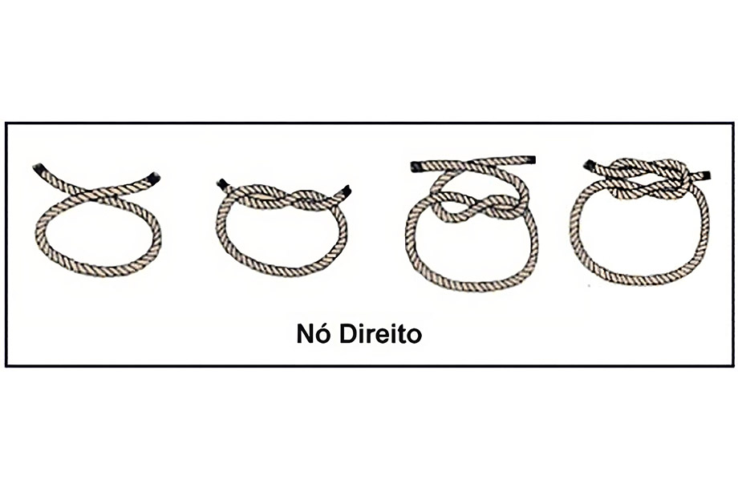
Nó Direito — sequência passo a passo
Como fazer — Nó Direito
- Cruze a ponta direita sobre a ponta esquerda.
- Passe a ponta direita por baixo da esquerda e puxe para formar a primeira meia-volta.
- Agora cruze a ponta que ficou à esquerda sobre a outra (oposto ao primeiro cruzamento).
- Passe por baixo novamente e puxe firme para assentar o nó.
- Ajuste as pontas e verifique que o nó ficou bem apertado e simétrico.
5.3. Nó de 8
Este nó é útil como nó terminal, aplicado na ponta das escolas e adriças para evitar que elas escapem através dos olhais ou passadouros. Tem aspecto semelhante a um 8.

Nó de 8 — sequência passo a passo
Como fazer — Nó de Oito
- Forme uma curva no cabo deixando a ponta livre por cima.
- Enrole a ponta por cima e passe-a por dentro da curva, formando uma figura em 8.
- Aperte lentamente mantendo as voltas alinhadas.
- Verifique que o nó ocupa espaço e impede passagem pelo olhal (é um nó terminal).
5.4. Lais de Guia
O Lais de Guia, considerado o rei dos nós, é usado para fazer uma laçada no chicote de um cabo. É usado para colocar as adriças no punho da pena das velas, amarração em argolas e até para unir cabos.
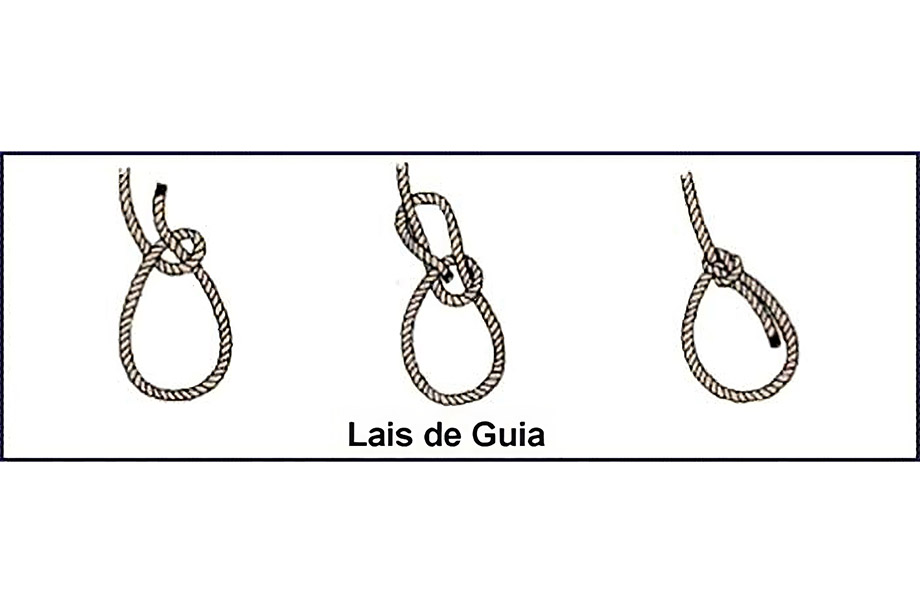
Lais de Guia — passo a passo
Como fazer — Lais de Guia
- Faça um pequeno laço (olho) no cabo, deixando a ponta livre por cima do laço.
- Passe a ponta livre por trás do objeto (ou do cabo fixo) e traga-a para frente.
- Passe a ponta pelo laço de baixo para cima.
- Leve a ponta por fora do laço e puxe para apertar, formando um laço fixo.
- Ajuste o laço e verifique se está firme e não escorrega.
5.5. Volta do Fiel (Calão)
Este nó é usado para amarrar um cabo a um ponto sólido, como um poste num cais. O seu principal uso a bordo é para segurar as defensas aos varandins.
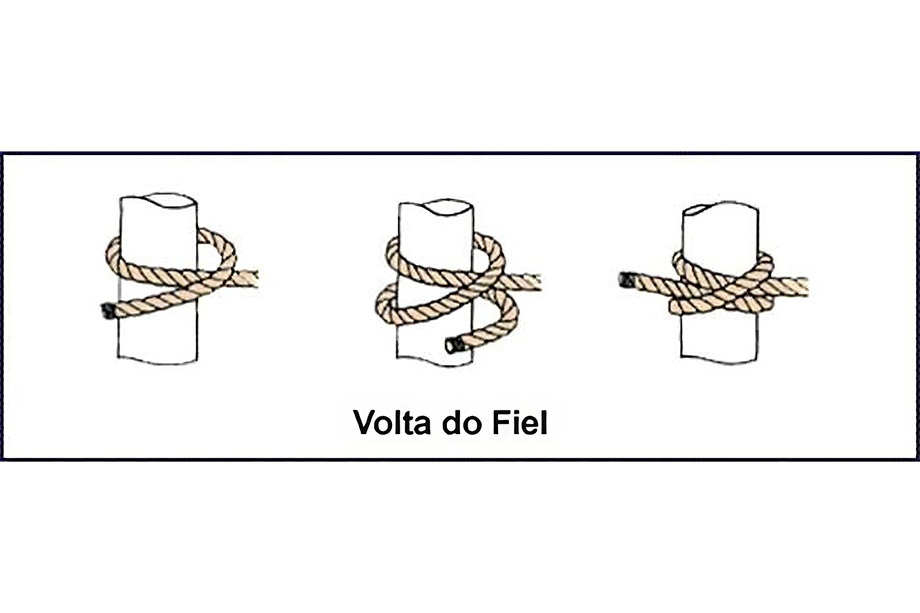
Volta do Fiel (Calão) — instruções
Como fazer — Volta do Fiel
- Dê uma volta completa da linha ao redor do objeto (poste, guarda-marina, etc.).
- Cruze a ponta livre sobre a parte principal e faça uma meia-volta (meio nó).
- Repita mais uma meia-volta para aumentar a segurança (duas meias-voltas).
- Puxe firme e ajuste para que o nó fique bem apoiado no objeto.
5.6. Nó de Escota
Este nó é usado para unir dois cabos de bitolas diferentes. Quando for usado com cabos de diâmetros muito diferentes devemos dar um cote adicional, transformando-o em nó de escota dobrado.
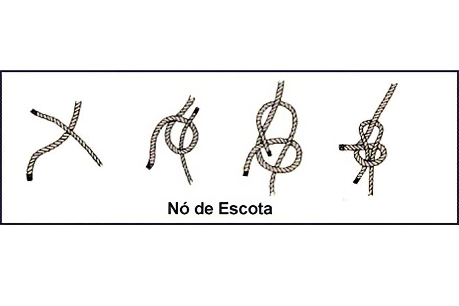
Nó de Escota — como fazer
Como fazer — Nó de Escota
- Forme uma pequena alça na corda mais grossa (ou na que ficará como corpo).
- Passe a ponta da corda mais fina através da alça, de baixo para cima.
- Envolva a alça com a ponta da corda menor e passe-a por baixo do próprio corpo.
- Puxe as pontas para ajustar; para cabos de diâmetros diferentes, dê uma volta extra (cote) antes de apertar.
5.7. Volta do Cunho
É a forma correta de amarrar um cabo a um cunho. Para dar este nó, deve-se seguir as ilustrações específicas.
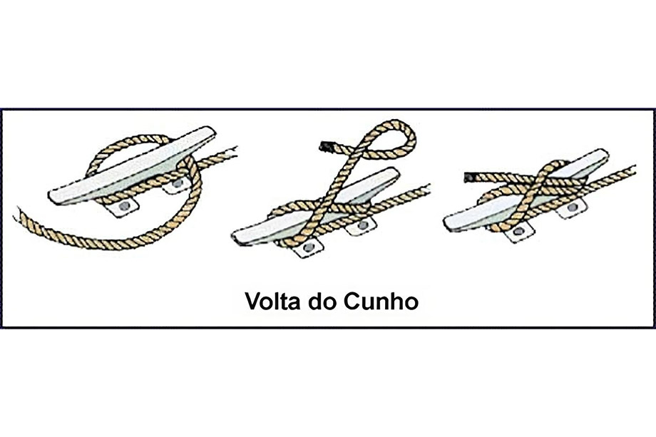
Volta do Cunho — aplicação no cunho
Como fazer — Volta do Cunho
- Passe a linha por baixo do primeiro chifre do cunho e envolva o corpo do cunho.
- Traga a linha em forma de "8" cruzando entre os chifres para prender a volta.
- Faça uma volta final de segurança (meia-volta) por cima do último chifre.
- Puxe para firmar e ajuste as voltas para que não escorregue.
🔗 Tipos de Nós Principais
✍️ SIMULADOS - PREPARAÇÃO PARA A PROVA DE ARRAIS AMADOR
🎯 Instruções para os Simulados
Esta seção contém questões no estilo da prova da Marinha do Brasil. Leia com atenção cada questão e clique para revelar a resposta correta com explicação detalhada.
Dica: Tente responder mentalmente antes de ver a resposta!
📋 SIMULADO 1 - Conhecimentos Gerais sobre Embarcações
Questão 1: A parte frontal da embarcação é denominada:
a) Popa
b) Proa ✓
c) Bombordo
d) Boreste
Resposta Correta: B
Explicação: A proa é a terminação da embarcação do corpo de vante, com formato de cunha para facilitar o corte da água. A popa é a parte traseira.
Questão 2: O lado direito da embarcação, olhando da popa para a proa, chama-se:
a) Bombordo
b) Través
c) Boreste ✓
d) Alheta
Resposta Correta: C
Explicação: Boreste (BE) é o lado direito da embarcação. Bombordo (BB) é o lado esquerdo.
Questão 3: A parte do casco da embarcação que fica em contato com a água é chamada de:
a) Obra morta
b) Linha d'água
c) Obra viva ✓
d) Convés
Resposta Correta: C
Explicação: A obra viva é a parte inferior do casco em contato com a água. A obra morta é a parte superior não em contato com a água.
Questão 4: O comprimento mínimo recomendado de amarra para fundear uma embarcação é de:
a) 25 metros
b) 30 metros
c) 50 metros ✓
d) 100 metros
Resposta Correta: C
Explicação: O comprimento mínimo recomendado é de 50 metros, sendo 3-5 vezes a altura em águas calmas e 5-7 vezes com tempo rijo.
Questão 5: Qual movimento da embarcação corresponde à oscilação lateral (de um bordo a outro)?
a) Cabeceio
b) Balanço ✓
c) Caturro
d) Arfagem
Resposta Correta: B
Explicação: Balanço é a oscilação lateral (de bombordo a boreste), Cabeceio é a oscilação proa-popa, e Caturro é a oscilação vertical.
🔥 SIMULADO 2 - Segurança e Combate a Incêndio
Questão 1: O triângulo do fogo é formado por três elementos. Qual alternativa contém TODOS eles?
a) Calor, água e fumaça
b) Combustível, comburente e calor ✓
c) Oxigênio, gás e temperatura
d) Fogo, água e vento
Resposta Correta: B
Explicação: O triângulo do fogo é formado por: Combustível (material que queima), Comburente (oxigênio) e Calor (energia de ativação).
Questão 2: Incêndio classe "B" envolve:
a) Materiais sólidos como papel e madeira
b) Líquidos inflamáveis como gasolina e óleo ✓
c) Gases inflamáveis
d) Equipamentos elétricos energizados
Resposta Correta: B
Explicação: Classe A: sólidos; Classe B: líquidos inflamáveis; Classe C: gases; Classe D: equipamentos elétricos.
Questão 3: Em caso de incêndio a bordo, a primeira ação do comandante deve ser:
a) Abandonar a embarcação imediatamente
b) Manobrar com vento a favor, colocando incêndio na popa ✓
c) Jogar água no fogo
d) Chamar o Corpo de Bombeiros
Resposta Correta: B
Explicação: Deve-se manobrar com o vento a favor, colocando o incêndio na popa, e garantir que todos usem coletes salva-vidas.
Questão 4: Qual tipo de extintor NÃO deve ser usado em incêndio classe D (equipamentos elétricos)?
a) Gás carbônico (CO₂)
b) Pó químico especial
c) Água pressurizada ✓
d) Pó químico ABC
Resposta Correta: C
Explicação: Água é condutora de eletricidade e não deve ser usada em equipamentos elétricos energizados. Use CO₂ ou pó químico especial.
Questão 5: Quais são os métodos de extinção de incêndio?
a) Abafamento, resfriamento, isolamento e interrupção da reação em cadeia ✓
b) Água, espuma, pó químico e CO₂
c) Calor, frio, vento e chuva
d) Evacuar, ligar e desligar
Resposta Correta: A
Explicação: Os quatro métodos são: Isolamento (retirar combustível), Abafamento (retirar oxigênio), Resfriamento (diminuir calor) e Interrupção da reação em cadeia.
🧭 SIMULADO 3 - RIPEAM e Navegação
Questão 1: No sistema de balizamento IALA-B, bóias vermelhas indicam o lado:
a) Boreste (direito) quando entrando no porto
b) Bombordo (esquerdo) quando entrando no porto ✓
c) Central do canal
d) Perigo isolado
Resposta Correta: B
Explicação: No sistema IALA-B (usado no Brasil), vermelho/encarnado indica bombordo (BB) quando entrando, verde indica boreste (BE).
Questão 2: Uma embarcação a motor com menos de 50 metros de comprimento, navegando à noite, deve exibir:
a) Apenas luz de mastro branca
b) Luz de mastro branca, luzes laterais (verde e vermelha) e luz de alcançado branca ✓
c) Apenas luzes laterais
d) Luz amarela piscante
Resposta Correta: B
Explicação: Embarcações a motor devem exibir: luz de mastro branca (proa), luzes laterais (verde BE, vermelha BB) e luz de alcançado branca (popa).
Questão 3: Em situação de rumos cruzados, qual embarcação deve manobrar?
a) A embarcação mais rápida
b) A embarcação que avista a outra pelo boreste ✓
c) A embarcação menor
d) A embarcação mais lenta
Resposta Correta: B
Explicação: A embarcação que avista a outra pelo seu boreste (direita) deve manobrar, pois a outra tem preferência.
Questão 4: O sinal sonoro de um apito longo significa:
a) Estou guinando para boreste
b) Estou guinando para bombordo
c) Advertência ou presença em área de visibilidade restrita ✓
d) Máquinas atrás
Resposta Correta: C
Explicação: Um apito longo indica advertência ou presença da embarcação em área de visibilidade restrita (neblina, chuva forte, etc.).
Questão 5: Em uma ultrapassagem, qual embarcação tem preferência?
a) A embarcação que está ultrapassando
b) A embarcação que está sendo ultrapassada ✓
c) A embarcação mais rápida
d) A embarcação maior
Resposta Correta: B
Explicação: Na ultrapassagem, a embarcação que está sendo ultrapassada tem preferência e deve manter rumo e velocidade.
🔗 SIMULADO 4 - Cabos e Nós
Questão 1: O nó usado para unir dois cabos de bitolas (diâmetros) iguais é:
a) Nó de escota
b) Nó direito ✓
c) Lais de guia
d) Nó de oito
Resposta Correta: B
Explicação: O nó direito é usado para unir dois cabos de mesma bitola. Para bitolas diferentes, usa-se o nó de escota.
Questão 2: O "rei dos nós", usado para fazer uma laçada fixa, é o:
a) Nó direito
b) Volta do fiel
c) Lais de guia ✓
d) Nó de escota
Resposta Correta: C
Explicação: O Lais de Guia é considerado o "rei dos nós" e é usado para fazer uma laçada que não escorrega.
Questão 3: O nó terminal usado para evitar que cabos escapem por olhais é o:
a) Nó de oito ✓
b) Nó direito
c) Lais de guia
d) Volta do cunho
Resposta Correta: A
Explicação: O nó de oito é usado como nó terminal para evitar que cabos (escolas e adriças) escapem através de olhais.
Questão 4: Para amarrar um cabo a um poste ou cunho, usa-se preferencialmente:
a) Nó direito
b) Volta do fiel (calão) ✓
c) Nó de escota
d) Nó de oito
Resposta Correta: B
Explicação: A Volta do Fiel (ou Calão) é usada para amarrar cabos a pontos sólidos como postes, cunhos e defensas.
Questão 5: Para unir dois cabos de bitolas muito diferentes, qual nó é mais adequado?
a) Nó direito
b) Nó de escota dobrado ✓
c) Lais de guia
d) Nó de oito
Resposta Correta: B
Explicação: O nó de escota é usado para bitolas diferentes, e quando muito diferentes, deve-se fazer o nó de escota dobrado para maior segurança.
💡 Dicas para a Prova
- Revise todos os módulos com atenção especial para RIPEAM e balizamento
- Pratique a identificação de luzes e sinais noturnos
- Memorize os tipos de nós e suas aplicações
- Conheça bem as classes de incêndio e extintores apropriados
- Estude as regras de preferência entre embarcações
- Leia atentamente cada questão na prova antes de responder
📖 GLOSSÁRIO DE TERMOS NÁUTICOS
🎯 Como Usar Este Glossário
Este glossário contém os principais termos técnicos utilizados na náutica. Use o índice alfabético abaixo para navegar rapidamente ou role a página para ver todos os termos.
A
Dispositivo de ferro ou aço, com formas variadas, que, lançado ao fundo do mar, rio ou lago, prende a embarcação através de amarra ou cabo.
Condutor de embarcações de esporte e/ou recreio. No Brasil, é a habilitação para comando de embarcações de até 50 toneladas de arqueação bruta.
Manobrar a embarcação para colocá-la junto ao cais, ponte ou outra embarcação, fixando-a com cabos ou amarras.
B
Sistema de sinais fixos e flutuantes que indicam os canais navegáveis, perigos, obstáculos e orientam a navegação.
Maior largura da embarcação, medida na parte externa do casco.
Lado esquerdo da embarcação, olhando da popa para a proa.
Lado direito da embarcação, olhando da popa para a proa.
Instrumento de navegação que indica a direção mediante uma agulha magnetizada que aponta para o Norte magnético.
C
Distância vertical entre a superfície da água (linha d'água) e a parte mais baixa da embarcação (quilha).
Piso superior da embarcação, que fecha o casco na parte superior.
D
Manobrar a embarcação para afastá-la do local onde estava atracada.
Peso ou volume de água que uma embarcação desloca quando está flutuando.
E
Qualquer construção com casco flutuante, capaz de transportar pessoas ou cargas sobre a água.
1) Parada programada da embarcação em porto durante uma viagem. 2) Relação entre as dimensões reais e as representadas em carta náutica.
F
Local apropriado para fundear (ancorar) uma embarcação.
Lançar a âncora para prender a embarcação no fundo, mantendo-a em posição.
G
Movimento de mudança de direção da embarcação, girando em torno de seu eixo vertical.
H
Via navegável, como rios, canais, lagos ou qualquer curso d'água utilizado para navegação.
I
International Association of Lighthouse Authorities - Associação internacional que estabelece padrões para balizamento marítimo.
L
Dispositivo localizado na popa da embarcação, utilizado para controlar a direção do navio.
M
Parte central da embarcação, entre a proa e a popa.
Unidade de distância utilizada na navegação marítima, equivalente a 1.852 metros.
N
1) Unidade de velocidade equivalente a uma milha náutica por hora. 2) Laçada em cabo para diversos fins náuticos.
O
Parte do casco da embarcação que fica acima da linha d'água.
Parte do casco da embarcação que fica abaixo da linha d'água.
P
Parte traseira da embarcação.
Parte dianteira da embarcação.
Q
Peça estrutural principal do casco, que vai da proa à popa na parte inferior da embarcação.
R
Regulamento Internacional para Evitar Abalroamentos no Mar - Conjunto de regras internacionais que regulam a navegação para prevenir colisões.
Direção em que a embarcação se desloca, expressa em graus a partir do Norte.
S
Trajeto ou rota planejada para uma viagem marítima.
T
Direção perpendicular ao eixo longitudinal da embarcação.
U
Manobra em que uma embarcação aproxima-se de outra vindo por sua ré em um ângulo superior a 22,5° para bombordo ou boreste.
V
Embarcação propulsionada principalmente pela força do vento sobre suas velas.
Z
Área marítima que se estende até 200 milhas náuticas da costa, onde o país costeiro tem direitos exclusivos sobre a exploração dos recursos.
📚 REFERÊNCIAS BIBLIOGRÁFICAS
📖 Fontes Principais
- BARROS, Geraldo L. M. - Navegar é fácil. Editora Catedral das Letras – 12ª Edição – 2006
- MARINHA DO BRASIL - NORMAN-03/DPC - Normas da Autoridade Marítima para Amador
- MARINHA DO BRASIL - RIPEAM - Regulamento Internacional para Evitar Abalroamentos no Mar
- MARINHA DO BRASIL - NORMAN-01/DPC - Normas para Inscrição e Habilitação de Embarcações de Esporte e/ou Recreio
🌐 Fontes Online
- CAPWING - Normas e Instruções Gerais de Segurança. Disponível em: http://www.capwing.hpw.com.br/Instrucao.htm
- CORPO DE BOMBEIROS MILITAR DO ESTADO DO PIAUÍ - Incêndios. Disponível em: http://www.cbm.pi.gov.br/incendios.php
- CORPO DE BOMBEIROS DO ESTADO DE SÃO PAULO - Cartilha de Orientações Básicas, Noções de Prevenção de Incêndio, Dicas de Segurança. Versão 05/2011
- SAPADORES DE COIMBRA - O Fogo. Disponível em: http://sapadoresclecoimbra.no.sapo.pt/O%20FOGO.htm
- WEST COAST - Manual de Vela Online / Aula 2 – Nós. Disponível em: http://www.westcoast.pt/index.php/pt/recursos/manual-de-vela-online/aula-2-nos
🔧 Manuais Técnicos
- MAHLE - Manual Técnico. Material técnico do Curso Mahle Metal Leve – Motores de Combustão Interna
- FABRICANTES DE MOTORES MARÍTIMOS - Manuais de operação e manutenção de motores de embarcações
⚖️ Legislação Aplicável
- Lei nº 9.537/1997 - Dispõe sobre a segurança do tráfego aquaviário em águas sob jurisdição nacional
- Lei nº 8.617/1993 - Dispõe sobre o mar territorial, a zona contígua, a zona econômica exclusiva e a plataforma continental brasileira
- Lei nº 9.966/2000 - Dispõe sobre a prevenção, o controle e a fiscalização da poluição causada por lançamento de óleo e outras substâncias nocivas
- Lei nº 9.432/1997 - Dispõe sobre a ordenação do transporte aquaviário
- Decreto nº 2.596/1998 - Regulamenta a Lei nº 9.537/1997
🏛️ Organismos Internacionais
- IMO - International Maritime Organization - Convenções e regulamentos internacionais
- IALA - International Association of Lighthouse Authorities - Padrões internacionais de balizamento